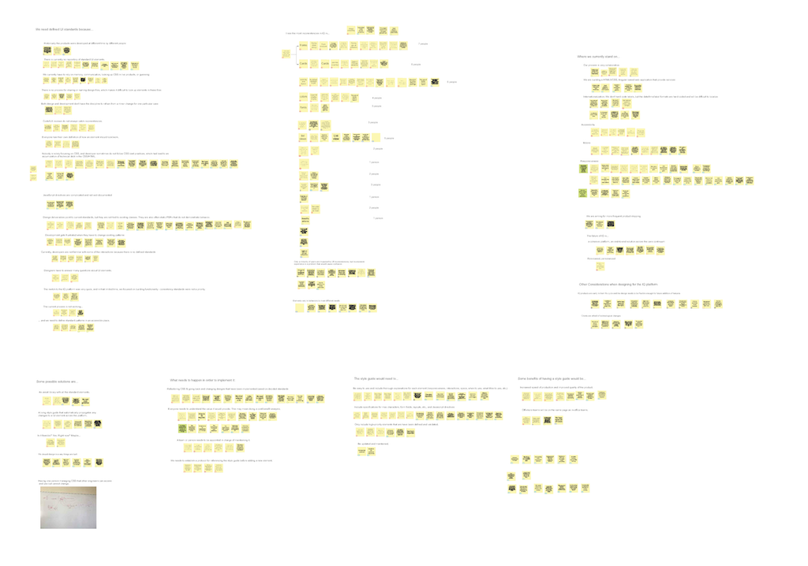

Solution at a Glance
1. Workflow Optimization
2. Web Component Library
3. Design System Reference Site Concept
The Problem
There is no comprehensive repository of recurring UI components and guidelines in either design or front-end development, which makes maintaining consistency throughout the platform a difficult and time-consuming task. Both design and development spend much time communicating about minute pixel details and it is affecting the efficiency of production. There is increasing need for a design system, a source of truth that integrates design and front-end.
Comparative Analysis
Facing the problem with little prior knowledge and guidance, I decided to start from comparative anlaysis and learn about current best practices. After analyzing eight of the best design systems on the market from four dimensions, we found that a good design system uses a taxonomy that fits the needs of the organization, fits in the team's workflow, outlines clear solutions to complex design decisions, is easy to use and share, and is always in sync with the evolution of the product.
The four demensions of a design system and common patterns of design system taxonomy
User Interviews
We are only human. Currently we are relying on memory and communication. And we have the mentality and drive and communication in place, but the system is not there.
To tailor the current best practices to the needs of our team, we conducted 15 one-on-one interviews with designers, developers, and product managers, and generated over 500 notes. We made an affinity wall of these notes to tell the story of why we need a design system and how we can build a good one.

I made a workflow map to highlight the current painpoints in our workflow and places where the design system can help improve.

UI Auditing
To analyze the current UI inconsistencies and start building standard UI componenets, I audited all the UI elements across the new cloud-based web applications with my fellow intern. We put the current UI components into emerging categories that will serve as the taxonomy of the new design system. We also categorized the current inconsistencies into visual design, interaction, functionalities, and code bugs.
Solution and Impact
At the end of the internship, we made the following suggestions:
- Improving the workflow: including using new tools for design and collaboration; always reference the design system before adding a new pattern or interaction; follow standard naming conventions for design files and CSS classes; singular ownership of the CSS files and design system
- A design system website as the reference point for both designers and developers
- Continue expanding and improving UI componenet library and documentation
We presented our project to the entire technology team at the end of the internship and got stakeholder buy-in. Developers started asking when the design system will go live immediately after the presentation, and the design system project had a kick start.
During the internship, I also demonstrated the advantage of using Sketch to build a component-driven design system and helped the team transition from other tools to Sketch. After the internship, I started building the Sketch web component library. Several developers have been building a Javascript plugin to connect our Sketch color palette to CSS variables and lay the foundation for a living design system that can stay in sync with the product.
Other Highlights
Navigation
I not only worked on the design system but also thought about different ways of improving the products. One problem I found was that the current top navigation can have three levels of flyouts on hover. It becomes cumbersome and difficult for users to discover. I explored many different navigation options, among which side navigation and mega menu are the two most promising. Side navigation frees more vertical space and indicates user's current location in the complicated hierarchy, but it is harder to implement and may be too different for many users. Mega menu is good for handling three levels of hierarchy, but some tabs do not have that many links to fill a mega menu.
Trying out Adobe XD when prototyping side navigation
Surgeon Timeline
Involved in the mobile initiative, I brainstormed different ways of showing a surgeon's timeline. The start time of the procedures is usually scheduled beforehand, but the end time is unknown. The problem can be solved by either providing an estimation of the end time or showing the appointments with a gradient block in the schedule.